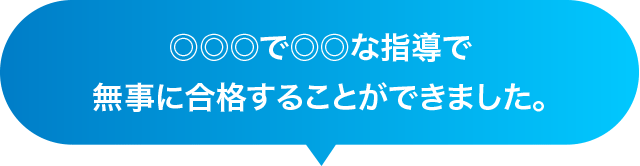

30年の実績、1800名の合格者輩出。高認・看護受験通信講座


合格実績30年の通信・通学講座。
経済的に不安が大きいけれど、
塾で勉強をやり直したい。
高校を中退したけれど、
大学へ行きたい。
社会人でゼロから、
看護の道へ。
江原予備校では、そんな人達がのべ1800名
夢を現実にして羽ばたいていきました。
夢を、「追いかけるための夢」で終わらせない。
500円で踏み出せる一歩。
あなたも夢を形にしてみませんか。
それぞれの分野に特化した
2種類のコース
Course江原予備校の通信講座を
選ぶ理由
Reasonオリジナルテキストだから
実現できる安心価格
他業者を挟まない「完全自社制作」のテキストだから、低料金。


短期間で習得可能
モチベーションを保てる【14日間】で完結できる自社テキスト。過去問につながる中学校の復習から始めるから、立ち止まることなく短期間でも習得可能。
江原予備校の
合格体験記
Passing experience
主婦から熊本看護専門学校！
「先生に「あなたなら2か月で間に合う。」と言われ迷いなく決めました。約2か月子育てと仕事をしながらのチャレンジでした。約3時間はノンストップでテキストを解き続けました。最後の2週間は過去問を解き、わからないときテキストを見返しました。面接も筆記も自分の持つ力を最大限に発揮するには自分の中の不安要素は足かせにしかなりません。それで不安なところは納得いくまで練習しました。自分と向き合う2か月でした。ありがとうございました。」


高卒認定試験 2か月で8科目合格！
「いろいろあって高校を中退し、高卒の資格が欲しいと思い、電話で通信講座を何件か問合せしました。どこも1年かかるといわれました。先生に電話したら、「2か月あれば大丈夫でしょう。」と聞いて、家族と相談しお願いすることにしました。どの科目も1か月かからなかったですが、英語は苦労しました。でも英語はいがいにわかりました。8科目ぜんぶ取れました。両親も大変感謝しています。先生に出会って本当に良かったです。ありがとうございました。」
通信教育ってちょっと不安・・・
その不安を解消します！

質問できる通信講座
「わからない」ときも安心の、LINEやZOOMで質問できる通信講座。 北海道から沖縄の方まで、幅広くご利用いただいております。
豊富な合格実績
江原予備校は30年の実績、これまでに1800名の合格者輩出。熟練の講師陣があなたをサポートします。
- ● 熊本大学 なんとか学部
- ● 熊本大学 なんとか学部
- ● 熊本大学 なんとか学部
- ● 熊本大学 なんとか学部
- ● 熊本大学 なんとか学部
- ● 熊本大学 なんとか学部
- ● 熊本大学 なんとか学部
- ● 熊本大学 なんとか学部
- ● 熊本大学 なんとか学部
- ● 熊本大学 なんとか学部
- ● 熊本大学 なんとか学部
- ● 熊本大学 なんとか学部
…など、有名大学から地方専門学校まで1800名の合格者排出実績


※1名様1セット・1科目に限らせていただきます。
お試しセット・ご質問など
お問い合わせ
Contactお問い合わせ項目が入ります！！！